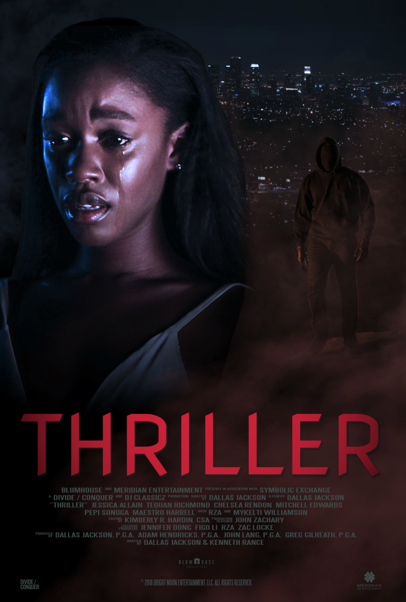

Showtime
During the 1980s, a failed stand-up comedian is driven insane and turns to a life of crime and chaos in Gotham City while becoming an infamous psychopathic crime figure.
Director
Todd Phillips
Writers
Todd PhillipsScott SilverBob Kane
Stars
Joaquin PhoenixRobert De NiroZazie Beetz
PARANOMAL ENCOUNTERS
A Couple fascinated by the mysterious world of the paranormal take their curiosity across country to some of the most paranormally active locations in America. The series follows Connor Biddle, a paranormal enthusiast and India, a skeptic with a family history of the supernatural will push the limits of their fear to the max in a effort to communicate with the other side.
THRILLER
A private detective hired to expose an adulterer in 1930s Los Angeles finds himself caught up in a web of deceit, corruption, and murder.
AVATAR
Jake Sully lives with his newfound family formed on the extrasolar moon Pandora. Once a familiar threat returns to finish what was previously started,
Jake must work with Neytiri and the army of the Na'vi race to protect their home.